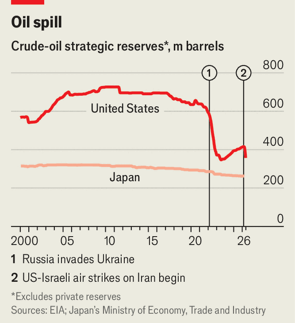

传出消息称，阿富汗赫拉特省（Herat）的女性因未遵守佩戴全套头巾服饰的指令而遭到逮捕。阿富汗宗教事务部（Ministry for the Promotion of Virtue and Prevention of Vice）官员试图拘捕不遵守规定的女性，却引发罕见抗议，导致至少两人死亡。巴基斯坦对阿富汗展开新一轮空袭，据喀布尔塔利班政府称，至少13人被杀，其中许多人是儿童。巴基斯坦于3月同意在两国数十年来最严重的冲突中暂停交火。巴方称其打击藏匿于阿富汗的恐怖分子，已击毙26名武装分子。中国领导人习近平时隔七年首次访问朝鲜，与该国独裁者金正恩举行会谈。■
美国5月年度通胀率升至三年来最高点4.2%，较4月的3.8%有所攀升。能源价格占当月涨幅的60%。剔除能源和食品的核心通胀率则更为温和，仅为2.9%。国际航空运输协会发布报告，分析伊朗战争对航空业的影响。该协会指出，霍尔木兹海峡的关闭“动摇了全球能源供应体系”，自2月末以来航空燃油价格已大幅上涨。全球航空公司今年的综合利润预计为230亿美元，较国际航空运输协会此前预测减少了一半。该协会警告称，任何关于航空燃油供应迅速恢复常态的预测都是“虚幻的”。一场竞标大战在意大利的蒙特德帕斯奇银行（Monte dei Paschi di Siena，简称MPS）展开，这家可追溯至1472年的世界最古老银行正面临激烈争夺。■
表面上看，中国的出口成就应有助于缓解其国内经济疲软。相反，这两者似乎相互强化。国内消费疲软导致物价下跌、利率走低和货币贬值，这一切使中国商品在世界市场上更具竞争力。出口激增也在支撑经济增长，使中国政策制定者得以推迟恢复消费者信心的更严厉措施，例如增加社会支出或努力稳定房地产市场。面对中国制造业的主导地位，欧洲领导人正寻求多元化其大陆的供应来源。中国领导人应更积极地拓展本国的需求来源。■ Subscribers to The Economist can sign up to our Opinion newsletter , which brings together the best of our leaders, columns, guest essays and reader correspondence.
§007The best way to celebrate America at 250 is to get behind the wheel
原题：The best way to celebrate America at 250 is to get behind the wheel · 板块：Leaders · 栏目：领导人
税后收入不平等程度已低于十年前。美国企业在人工智能、生物医药、娱乐和航天科技领域处于领先地位。肯尼迪中心正恢复其原名。数据与氛围之间的距离，构成了2020年代美国的核心谜题。探索这一谜题正是我们本周推出的新播客的创作初衷，以此庆祝这个非凡国家的盛大生日。这部六集系列节目将是一场与 Alexis de Tocqueville 一同的公路旅行——这位19世纪30年代热爱美国的法国贵族，曾以其预见性著作《民主在美洲》描绘了这个国家。■
全球数字分发让像泰勒·斯威夫特这样的歌手名声大噪，他们的版税收入增长速度远超娱乐产业链中下游的艺人。然而流媒体似乎还带来了另一个不那么显而易见的影响。随着数字分发逐渐覆盖更多国家的家庭，顶级明星的构成比过去更加多元。Spotify去年的全球Top 50榜单中包含16种语言的歌曲，是2020年的两倍以上。丹麦人并非唯一坚持自我风格的群体。2023年，威利·佩奇（Will Page）和克里斯·达拉里瓦（Chris Dalla Riva）在伦敦政治经济学院（London School of Economics）的论文中指出，包括法国、德国、意大利和波兰在内的多个欧洲国家，其Top 10榜单中本土歌曲的占比在过去十年持续上升。此后这一现象似乎已蔓延至更多地区。
正如音乐产业一样，高管们得出结论：想要打造全球爆款，最好的办法是创作真正本土化的内容。谭先生（Mr Tanz）认为，《青春期》（Adolescence）之所以能全球热播，恰恰是因为其粗粝的英伦特质，而非一反其本质。他表示，Netflix的数据表明，任何真正具有全球影响力的节目，都必须首先在本国拥有极高热度。“你需要一个炽热的核心粉丝群体，而非只是 tepid flames just dispersed around（ tepid flames just dispersed around ）”，他说道。剧集需要超级粉丝，就像音乐人需要铁杆歌迷一样。结果就是，观众正在减少对美国娱乐内容的观看。据测量消费、搜索和社交互动的Parrot Analytics统计，美国剧集在全球电视剧需求中的占比，已从2022年的51%降至去年的42%。在足够大的市场中，流媒体平台愿意支付版权费的国家，本地内容的消费量正在上升。
2022年至2025年间，89%的国家对非美国外国内容的需求份额上升，Parrot的克里斯托弗·汉密尔顿（Christofer Hamilton）发现这一趋势。"美国作为全球内容供应商的主导地位正在减弱，"他指出。要了解未来趋势，可参考社交媒体上的用户生成视频。像YouTube这样的平台已涵盖全球各国的数小时内容，但消费模式却顽固地保持本地化。伊利诺伊大学的亚历山德雷·戈内尔维斯（Alexandre Goncalves）和叶曼·玛格丽特·黄（Yee Man Margaret Ng）分析了2022至2025年间104个国家YouTube的"热门"榜单。在726,627条视频中，四分之三仅在单一国家走红。真正实现全球流行几乎不可能：仅有三支视频在所有国家都成为热门（包括苹果产品发布、MrBeast挑战赛和BLACKPINK音乐视频）。■
“美国游戏开发商长期以来主导全球互动娱乐产业——在文化、商业和技术层面——的假设已不再成立。”纽约大学斯特恩商学院的乔斯特·范·德鲁内（Joost van Dreunen）在一篇关于《堡垒之夜》衰落的文章中写道。“他们培养的受众正在转移，而他们忽视的竞争对手如今正大举蚕食他们的市场。”其中最主要的挑战者是中国。过去六年，中国游戏公司在全球非中国市场中的份额从10.7%提升至14%。传感器塔（Sensor Tower）的萨姆·阿诺（Sam Aune）表示，中国公司“已席卷移动游戏领域”，该机构统计显示，全球应用内收入排名前三的公司中有两家来自中国（见图表3）。阿诺还统计了今年十大市场中收入最高的移动游戏。■
这些计划在他任职期间被搁置，但一旦他卸任，势必会重新提上议程。自韩国1980年代末实现民主化以来，超过半数的总统都曾被弹劾、监禁或两者兼施。李明博承认自己面临类似命运的可能性“相当高”。因此，他的历史地位在很大程度上取决于他能否打破青瓦台的诅咒。■ 更正（2026年6月10日）：由于翻译错误，本文早期版本误述了李明博对超额利润可能使用方式的立场。欲获取亚洲政治、经济与安全领域的独家报道，请订阅我们的周报专供 newsletter Asia Bulletin。
§011亚洲环保人士称过度鸡蛋生产充满残酷 鸡与蛋的困境
原题：Asian activists say too much egg production is cruel · 板块：Asia · 栏目：亚洲
将有输家，主要是那些饮用烈酒的贫困男性。但政府报告还提出新措施，以降低他们转向廉价酒的风险。这项改革很可能被复制。在印度联邦体制下，成功的政策传播迅速。这对该国啤酒、葡萄酒和高端烈酒的饮用者来说是个好消息。更重要的是，这将是常识的胜利。而要达到这一目标，只需将集中化的财政压力与八十年的虚伪结合。这是一个令人清醒的思考。■ Subscribers to The Economist can sign up to our Opinion newsletter, which brings together the best of our leaders, columns, guest essays and reader correspondence.
§015Nukes were off the agenda as Xi Jinping visited North Korea
原题：Nukes were off the agenda as Xi Jinping visited North Korea · 板块：China · 栏目：中国
卡内基国际和平基金会（Carnegie Endowment for International Peace）的同泽（Tong Zhao）表示，中国不仅希望牵制俄罗斯，还意图使美国的军事部署更加复杂。习近平主席旨在借机利用韩国与美国之间的紧张关系，美国希望其驻韩部队更多聚焦中国，而韩国部队则承担更多来自北方的威胁责任。同泽指出，中国也渴望经由朝鲜进入日本海。尽管中国近期试图通过改善跨境基建恢复经济联系，但金（Kim）似乎在拖延相关努力。北京与平壤之间的直航和列车线路在疫情期间暂停，于三月恢复，但朝鲜至今仍未允许中国游客入境。
桑德·托德里尔和布拉德·塞特瑟在欧洲改革中心（Centre for European Reform）的分析中提出了一种欧洲版的美国301条款工具。该工具允许通过广泛关税应对损害美国贸易的实践。第三种选择是将防御性贸易措施与产业政策相结合。德国国际关系研究所（German Council on Foreign Relations）的沙欣·瓦莱认为，这种将贸易措施与投资及产业政策结合的方式是重大的思想转变。欧盟近期提议将部分政府采购与本地内容挂钩，其科技主权方案还包括提升欧洲半导体供应链。各国政府正在将自身的补贴纳入其中。最大的未知数是中国的反应。■
野村证券的卢婷指出，这或许会刺激住房需求，推动房地产领域局部复苏。其他一些城市或许也有类似的好运。合肥这座沉寂的安徽省城市却培育出多个行业翘楚。这里拥有BOE Technology（全球最大液晶显示器制造商）和NIO（高端电动车制造商）的工厂，其大学孵化出语音识别AI领域的明星企业iFlyTek，地方政府还联合创立了中国领先的先进存储芯片制造商CXTM。要了解此类项目为何会失败，可乘坐高铁一小时抵达鹰潭市，再前往宜春市。2021年，该市政府曾投入23亿元人民币，在 sprawling National High-tech Development Zone（国家级高新技术开发区）内建设电动车工厂，但这一仓促的产业升级尝试却以失败告终。
竞争扭曲了他们的优先事项，促使他们将大量注意力——也许过多——放在尖端科技上，而对解决中国持续存在的经济问题却投入不足，顾问补充道。尽管机器人数量在增加，但民众情绪依然低迷。4月零售销售同比仅增长0.2%，这是自2022年底以来的最低水平，当时中国尚未完全摆脱疫情封锁的阴霾。3月家庭银行贷款未偿还金额首次出现同比下降，与去年同期相比。仅靠几次高技术领域的成功——无论多么引人注目——都无法提振中国民众的信心。■ For more expert analysis of the biggest stories in economics, finance and markets, sign up to Money Talks , our weekly subscriber-only newsletter.
§021中国新兴产业规模有多大
原题：How big are China’s emerging industries? · 板块：China · 栏目：中国
“在美国各地，许多地方政府‘竭尽全力’让老年人能负担得起留在自己家中的费用，”阿诺德基金会（Arnold Ventures）住房政策专家珍妮·舒茨（Jenny Schuetz）表示。她补充说，这通常以税收优惠的形式体现。然而，目前新建的少数住宅在户型和功能上未能满足那些倾向于缩小居住规模的老年人需求。全国住宅建筑协会（National Association of Home Builders）数据显示，2024年新建的单户住宅中，超过10%拥有两间卧室；同年新建住宅中，五个或更多卧室的占比几乎相同。郊区缺乏足够适合老年人舒适安度晚年的小型住宅或公寓，让他们能留在社区内，靠近朋友、医生和教堂。这些后果正蔓延至郊区。■
原题：Should priests have to report child abuse disclosed in confession? · 板块：United States · 栏目：美国
美国各州对这一问题采取不同立场
穿越中欧，你终将遇到成千上万座描绘某人站在桥上手指指向舌头的雕像。根据传说，14世纪的神职人员约翰·内波穆克（John of Nepomuk）曾聆听波西米亚女王的忏悔，却因国王的嫉妒而被要求泄露其妻的秘密。当约翰拒绝时，国王下令将其溺死。这位约翰因坚守天主教最神圣的教义之一——忏悔的绝对保密性——而被处决。六百年后，守口如瓶的神父们再次面临考验——这次是各州立法机构的审视。
随着天气转暖、各州立法会议结束，密苏里州和佛蒙特州的法案均在委员会阶段夭折，未能进入议场。佛蒙特州推动该法案的立法者埃斯梅·科尔（Esme Cole）并未放弃。儿童安全倡导者认为，这些挫败可能标志着宗教右派在该议题上的影响力达到顶峰，天平或将再次倾斜。但其他人对此并不确定。“教会永远获胜，”马滕斯先生（Mr Martens）表示。■ 关注美国政治动态，请订阅《The US in brief》，这是一份每日提供重要政治新闻快速分析的简报；以及《Checks and Balance》，一份每周分析美国民主现状和选民关切议题的简报。
§025社交媒体引发青少年聚集事件及由此引发的愤怒 美国
原题：Social media is behind both “teen takeovers” and the outrage they fuel · 板块：United States · 栏目：美国
如今，他已成为一位真正的美食博主（#EatSunnyvale），拥有满是餐厅评论的网站（全部都是正面评价）。最近在一家越南咖啡馆，克莱恩先生甚至被邀请加入一段TikTok舞蹈。他耸耸肩说：“如果市长与网红跳起舞能带来影响，那这就是我能做到的最容易的事。”■ 保持对美国政治的敏锐关注，订阅我们的每日简报《The US in brief》，获取对最重要政治新闻的快速分析，以及每周专栏《Checks and Balance》，深入探讨美国民主现状与选民关切的核心议题。
由于他对美国和自治制度充满热情，他的警告更具分量。约翰·斯图尔特·密尔（John Stuart Mill），当时最伟大的英国自由主义者，曾盛赞《民主在美洲》（Democracy in America）。他称其为“第一部系统阐述民主思想的哲学著作”。但他认为托克维尔在某些观点上过于悲观。密尔设想，在民主制度下，最智慧的人将引领社会。托克维尔则认为民主并非如此运作。像杰克逊这样的人物会引领社会，因为民主制度中民意至高无上，而民主国家的政府往往趋于平庸。最优秀的人才将忙于商业事务，无暇顾及政治。至于公众意见由杰出作家和思想家塑造这一想法，相反的情况更可能发生。美国的密尔对应者将追随民意，而非引领民意。■
一个由人们追求自身幸福组成的平等民主社会，可能会变得如此碎片化，以至于公民们对政治彻底失望，选择退出，将一切交由他人处理。在这些民众之上，将矗立起“一种庞大而监护性的权力，它独自承担起保障他们的满足感并守护他们命运的职责”。这种权力将试图让民众“永远停留在孩童状态”。在完成这次考察后，托克维尔再未返回美国。他已看到足够多的景象，足以向家乡的人们揭示他所预见的未来。无论人们是否喜欢，都无法回到过去那种状态。他对此的判断同样正确。■ 关注美国政治动态，请订阅我们的每日简报《美国简报》（The US in brief），获取最重要的政治新闻快速分析，以及每周专栏《Checks and Balance》，深入探讨美国民主现状及选民关切议题。
§028尼克斯队代表纽约——乃至资本主义——的最佳面貌
原题：The Knicks represent New York—and capitalism—at its best · 板块：United States · 栏目：美国
在马刺队第三场胜利终结了横扫希望的同时，球迷们也用口号庆祝这座城市的多元文化与消费主义：“我的市长是穆斯林！/我的贝果是犹太风味！/我的香奈儿是基督教的！/尼克斯队四连冠！”或许尼克斯队的球队精神与打法更指向一种更开明的资本主义，这种模式与纽约人一贯的务实、低调与强烈进取心相契合。沉稳的布鲁诺森先生最近曾罕见地流露出一丝不耐，当记者指出“某些球星”会比他更希望掌控比赛时，他平静地回应：“首先，我不是球星。其次，我只想赢。” ■ The Economist的订阅者可注册我们的Opinion newsletter，汇集了最佳的社论、专栏、特邀评论与读者来信。
§029世界杯将考验墨西哥对领土的控制力 美洲版 丑陋的比赛
原题：The World Cup will test Mexico’s control over its territory · 板块：Americas · 栏目：美洲
尽管如此，这些帮派本身并非赛事面临的最大安全威胁。墨西哥城咨询公司Lantia的埃德加多·古铁雷斯（Eduardo Guerrero）表示，犯罪集团几乎没有动力破坏赛事。对体育场的袭击不仅会引发墨西哥的回应，甚至可能牵涉到美国。这对商业来说可不是好事。帮派无疑会趁机牟利，但方式隐蔽，通过欺诈、卖淫等非法活动。美国司法部前官员克雷格·蒂姆（Craig Timm）表示，「各地罪犯一看到世界杯，就看到钱的象征。」负责政府世界杯安保筹备工作的罗曼·维拉尔瓦佐·巴里奥斯将军（General Román Villalvazo Barrios）表示，他的官员们正在应对远超帮派的广泛威胁。■
该计划包括约10万名士兵、警察和私人安保人员，辅以监控技术及体育场和球迷区的广泛隔离带。安全规划者最担心的是“软目标”。华盛顿的战略与国际研究中心（Centre for Strategic and International Studies）认为，赛事面临的最现实威胁来自单独行动者或小型团伙，他们可能针对球迷区、交通枢纽、酒店区、体育场外的排队人群等地点发动袭击。但此类袭击在墨西哥极为罕见，因为该国的暴力事件通常由帮派引发，而非恐怖分子。相比之下，这类袭击在美国更为常见，因为枪支更容易获取。无人机也是另一大隐患。主办国已制定联合策略，以检测并应对体育场及球迷活动周边的未经授权飞行器。■
反对该项目的人担心，如果他们这样做，将可能通过宪法途径实现从圣基茨（St Kitts）联邦伙伴单方面分离。"这对我们在尼维斯（Nevis）来说是前所未有的最大威胁，"查尔斯顿（Charlestown，该岛首府）的活动人士凯文·达利（Kelvin Daly）表示。然而像达利这样反对自由主义特区的人并未取得显著进展。原因之一是政治风向的转变，拉美地区正涌现出一批右翼亲商领导人。另一个原因是资金。普罗斯佩拉（Próspera）向工人支付的工资高于洪都拉斯最低工资标准。维拉蒂斯村（Veritas Villages）声称拥有名为"帮助他们帮助自己"（Help Them Help Themselves）的教育和医疗慈善机构。4月时，迪斯蒂尼（Destiny）承诺，若开发项目推进，将向尼维斯居民每月发放100美元，并分享未来利润分成。■
如果乌克兰西部地区要成为新的工业核心，就必须建设新的基础设施：道路、桥梁、能源和天然气网络。斯米尔诺夫希望国家政府能提供帮助。他指出，另一种选择会更糟糕。“如果我们的经验丰富的工程师分散——如果他们去超市或商店工作——我们实际上会失去一切已建成的成果。” 该项目官方名称为“Shoulder to Shoulder”，已为当地经济带来新的收入和机会。佩罗里利亚克表示：“我们正努力在乌克兰打造一个汇聚最高质量工程师的中心。” 一所新成立的技术学院正在培训本地年轻人，他们获得工厂的高薪实习机会。但并非所有佩雷奇恩（Perechyn）本地人欢迎东部来的工程师。已发生数次抗议活动。这一倡议不仅转移了产业，也转移了部分风险。■
俄罗斯军队在移动和隐藏弹药方面已显著提升。但港口、油库和炼油厂却屡遭袭击。据芬兰能源与清洁空气研究中心（Centre for Research on Energy and Clean Air）统计，2025年1月至4月，俄罗斯化石燃料出口收入同比减少4.6%。但这一数据可能低估了实际损失。我们的模型通过分析俄罗斯出口收入与布伦特原油价格的历史关系来估算缺口。结果显示，自2025年6月起，俄罗斯收入已低于预期水平。2025年6月至12月期间，收入为180亿美元，比预期低12%；2026年前四个月收入则比预期低34%。其他因素也影响收入，包括卢布升值抵消了油价上涨的影响，以及收紧的制裁迫使俄罗斯以折扣价出售能源。■
此类说法缺乏分量。欧洲安全与合作组织（Organization for Security and Co-operation in Europe）这一政府间机构称此次选举“透明高效”。事实是反对派失利源于其政纲。帕希尼扬承诺和平与经济发展，而卡拉佩特扬则提出陈旧的民族主义叙事与重返俄式伙伴关系，而多数亚美尼亚人认为这种模式曾让他们受挫。卡拉佩特扬之子在播客中提出的“性部”提案——旨在应对人口下降并确保“没有女性感到不满”——暴露了“强亚美尼亚”国内政策的肤浅。至于前总统罗伯特·科查良，他领导的第二大反对党则唤起了民众对暴力与寡头统治的痛苦记忆，这正是亚美尼亚威权时代的特征。■
帕什因扬（Pashinyan）的胜利将让亚美尼亚的邻国土耳其和阿塞拜疆安心，其外交政策转向不会轻易逆转。与土耳其正常化关系是可能的成果之一，土耳其于1993年关闭与亚美尼亚边境以支持其盟友阿塞拜疆。亚美尼亚与土耳其已同意重建边境的历史桥梁，并正在恢复两国间的旧铁路路线。美国支持的“特朗普国际和平与繁荣路线”（Trump Route for International Peace and Prosperity）贸易路线的完成如今更显可能，该路线将通过南部亚美尼亚连接阿塞拜疆与其飞地纳希切万。尽管帕什因扬获胜，但部分支持者情绪苦乐参半。公民契约党（Civil Contract）未能获得可举行修宪公投所需的三分之二多数。■
该党希望借此改革司法体系，但此举对和平进程同样至关重要。阿塞拜疆要求亚美尼亚在签署和平条约前，从宪法中删除有关纳戈尔诺-卡拉巴赫（Nagorno-Karabakh）的表述，该地区曾是两国争夺的焦点。“现在的问题是，阿塞拜疆是否愿意在亚美尼亚宪法条款未作调整的情况下，推进条约签署与批准程序，还是将继续坚持这一要求。”卡内基国际和平基金会（Carnegie Endowment for International Peace）的佐尔·希里耶夫（Zaur Shiriyev）表示。土耳其坚持要求亚美尼亚和阿塞拜疆签署和平条约后才会开放边境。俄罗斯也可能制造麻烦。卡拉佩特扬（Mr Karapetyan）的表现好于民调预期。■
对凡尔赛条约的粗浅理解是：羞辱侵略者会引发怨恨，从而埋下再次战争的种子。更深刻的教训是，复仇的渴望本身不能成为最终目标。欧洲民众对看到普京被贬低甚至更糟的渴望是合情合理的。他的残暴政权犯下了最严重的罪行，战争责任也在于他。然而，终有一日，希望很快，他可能成为缔造和平的伙伴。■ The Economist的订阅者可注册我们的Opinion通讯，汇集了最佳的社论、专栏、嘉宾文章和读者来信。
§043为何强人误判欧洲国际 《电讯报》
原题：Why strongmen are wrong to loathe · 板块：Europe · 栏目：欧洲
自曼彻斯特市政府接管票价和时刻表以来，乘客数量持续增长。但曼彻斯特的公交系统也动摇了全面国有化的论调。这些公交仍由私人所有，运营商通过竞标获得运营合同。公用事业经济学家迪特·赫尔姆（Dieter Helm）称，关于所有权的争论是“简单化”的。更值得探讨的是，各方在哪些职能上表现更优。在他看来，规划与系统设计应由公共领域承担，而服务提供则通过私有竞争创造价值。这并非激进的变革。目前由公共机构运营的国家能源系统运营商（National Energy System Operator）已负责电力网络的规划，政府也在向类似方向推进水务管理。关于所有权的争论往往陷入宗教般的狂热。现实却是枯燥的技术官僚主义。■
英国交通大臣海迪·亚历山大承诺，新成立的国营铁路公司Great British Railways（GBR）将增加服务、简化票价并提供更清洁的厕所。工党左翼视此举为全面国有化经济的首步。目前的改革主要体现为给新列车涂上鲜艳的英国国旗颜色。尽管部分线路服务有所改善，但像南西线路（自2025年5月国有化后）的取消率却上升了。国有化未必能解决铁路系统的根本问题。这在很大程度上是因为私有化并非如许多人所声称的那样灾难性。铁路旅行人次从1994-95年的7亿增长至2024-25年的17亿（见图表1），这主要得益于人口结构变化，但私营部门的创新票务策略也起到了推动作用。■
工党已表明其无法容忍票价上涨，并高调宣布今年冻结票价。削减投资将导致服务质量下降。这是一场棘手的权衡，而公有制无法解决这一问题。亚历山大女士坚称国有化不仅仅是“表面文章”。但若工党回避根本问题，风险是沦为一个草率的方案。■ For more expert analysis of the biggest stories in Britain, sign up to Blighty, our weekly subscriber-only newsletter.
§046英国：游乐场政治
原题：A kids’ social-media ban would be a bad parting gift from Keir Starmer · 板块：Britain · 栏目：英国
原题：Fear of the SaaSpocalypse is tormenting techland · 板块：Business · 栏目：商业
最近在旧金山的WeWork共享办公空间里敲代码时，笔者注意到一架飞机在天际线飞过，拖着横幅。横幅上写着“SAAS IS DEAD”（SaaS已死），巨大的字母格外醒目。与他共用办公空间的软件开发者们也注意到了这一幕。“谢谢提醒”，有人苦笑着抱怨。这场由人工智能初创公司出资的活动，反映了科技界日益普遍的担忧：AI正对软件即服务（SaaS）行业构成生存威胁，而该行业数年前还被视为不可阻挡的力量。
目前，Serval的代理机构仍与ServiceNow平台合作。但该公司的最终目标是打造一个完全自主的替代方案。一些企业对将依赖从一家供应商转移到另一家供应商持谨慎态度。它们可能更倾向于借助AI自行开发DIY软件系统。SaaS行业曾通过说服客户，认为购买标准化软件程序比自行开发定制化系统更便宜、更简单而取得成功。软件公司曾投入巨资预先开发产品，随后通过几乎零边际成本的广泛分发获得丰厚利润。然而，如今企业正拥抱“自建与采购”（build versus buy）的理念，门洛风投（Menlo Ventures）的Tim Tully表示，这一趋势已远超“vibe-coding”简单工具以自动化繁琐任务的阶段。■
AI代理“不需要席位”，曼尼·梅迪纳（Manny Medina）指出，他是Paid.ai的创始人，这家初创公司推出了“SAAS IS DEAD”飞行横幅，提供工具帮助开发者为其代理创收。像Salesforce这样的公司提供自家AI代理时，通常采用席位计费与使用量计费相结合的定价模式，依据客户使用多少个token（AI模型处理的文本片段）来计算费用。然而，尽管SaaS公司从这些新产品中获得的收入正快速增长，但分析师塔尔·利亚尼（Tal Liani）认为，这些收入还远不足以弥补客户减少购买传统许可证带来的潜在损失。“风险在于自我吞噬”，他说道。这其中蕴含着一种讽刺意味。不久之前，软件还被说成“正在吞噬世界”，如今的危险却是它正在吞噬自己。■
原题：The world’s wealthy are migrating like never before · 板块：Business · 栏目：商业
即便是富豪也感到动荡不安。许多原本因低税率或人身安全而选择海外定居的富豪，如今对定居迪拜、香港甚至美国或英国的信心也有所动摇。不过请拭目以待，仍有大量政府乐于接纳拥有财富与技能的外国人。与此同时，一个日益壮大的专业顾问行业正为富豪们提供迁徙服务。对这些顾问而言，生意正蓬勃发展。据研究机构New World Wealth估算，去年有超过140,000位富豪迁徙，创历史新高；今年预计这一数字将攀升至165,000（见图表）。
各种框架可用于提升任务优先级。艾森豪威尔矩阵（Eisenhower Matrix）是个人时间管理的经典方法，通过将任务分为四个象限进行分类。紧急且重要的任务应排在首位；重要但不紧急的任务则需要专门安排时间处理；若处理的是不紧急也不重要的任务，则需要好好反省自己。另一种划分任务的方法是行动优先级矩阵（Action-Priority Matrix），该方法依据任务的影响程度和所需努力程度进行分类。产品团队常使用一种名为RICE（reach, impact, confidence and effort）的评分模型。MoSCoW则是团队区分“必须有”“应该有”“可以有”和“不会有的”功能的框架。■
谷歌率先提出70:20:10规则，用于分配资源推动创新：70%用于核心业务，20%用于相关领域，10%用于全新创意。（如果选择优先级框架的念头让你感到无所适从，不妨随机选一个。）然而，明确重要事项只是第一步。若为团队设定优先级，还需清晰传达。2017年，麻省理工学院（Massachusetts Institute of Technology）的唐纳德·苏尔（Donald Sull）及其合著者曾向124家企业的高管提问，要求他们复述公司战略优先事项。研究发现，通常只有半数以上领导层对这些优先事项达成共识。当优先处理新事物时，也需降低现有事物的优先级。■
中国将原油进口量削减了约500万桶/日，回到战前水平以下；配给制度导致其他地区整体需求下降了相似幅度。巴西、委内瑞拉等国的产量略高于战前水平。其余缺口则通过动用全球战略储备填补——尤其是富裕国家的战略石油储备（SPRs）。3月，国际能源署（International Energy Agency）的32个成员国承诺从政府储备中释放4亿桶原油，这是该机构历史上最大规模的协调减储行动。目前已有近半数原油交付，以创纪录的250万至300万桶/日速度完成。但未来几周的释放速度可能大幅放缓。这些释放措施是否持续，将决定今年夏季油价能否保持稳定。这场假期惊悚剧的关键角色是日本、美国和欧洲。■

日本在战争初期约90%的原油依赖中东进口。该国拥有全球最大的战略石油储备之一，并曾是协调国际能源署（IEA）释放储备的最积极倡导者。Kayrros（一家通过卫星追踪储油量的公司）数据显示，日本早在3月IEA行动前就已悄然从战略石油储备中开始释放原油。随后日本宣布将从公共储备中释放相当于50天消费量的原油——约9亿桶，其中大部分已分配给国内炼油厂。释放速度一度攀升至每日100万桶以上，但本月已降至每日60万桶。日本能源经济研究所（Institute of Energy Economics）的寺田孝也表示，过去两个月内，当地炼油厂已通过管道运输和从非海湾国家（尤其是美国）采购等方式，基本替代了此前经霍尔木兹海峡进口的原油。■
石油市场可能很快不再平静。由于亚洲、美洲和欧洲不愿或无法动用其储备，全球商业库存预计在9月将达到最低操作水平，无法填补世界所需的原油缺口。届时，调整压力将更多地落在中国身上。中国拥有充足的库存，可维持数月。但中国领导人可能不愿在看不到和平的情况下消耗这些储备。一旦战争结束，为补充被消耗的储备所需石油将更多，这将使价格长期保持高位。■ For more expert analysis of the biggest stories in economics, finance and markets, sign up to Money Talks , our weekly subscriber-only newsletter.
2024年，18%的论文有外国合作者，较2000年至2019年的24%有所下降。每项研究都存在一定的局限性。无论原因如何，忽视中国研究将带来后果。当研究人员忽略有价值的成果时，思想传播会变慢，突破所需时间也会更长。随着中国成为新知识的重要来源，这种盲点的成本将不断上升。■ To track the trends shaping commerce, industry and technology, sign up to “The Bottom Line”, our weekly subscriber-only newsletter on global business.
原题：Who should win the World Cup? · 板块：Culture · 栏目：文化
对于天使·迪马利亚（Ángel di María）来说，这已超出承受极限。这位阿根廷前锋在2022年世界杯决赛中进球后泪洒当场。对于冈萨洛·蒙铁尔（Gonzalo Montiel）而言，这同样难以承受。他在点球大战中打入制胜一球，成为不朽传奇后，脱下国家队球衣将其掩面。而对阿根廷这个国家来说，这几乎也是极限：当约400万人涌向布宜诺斯艾利斯庆祝胜利时，球队不得不放弃大巴，从直升机上挥舞国旗。对球员、球迷乃至整个国家而言，赢得世界杯是一种超越世俗的狂喜。■
坎贝尔先生指出，大都会艺术博物馆（The Met）曾多次愿意以最薄弱的证据为依据，扩充其藏品。得益于调查人员的努力，拉特福德（Latchford）的犯罪活动规模终于浮出水面——尽管他在2020年去世，未能接受审判。《偷神者》（The Man Who Stole the Gods）读起来像一部惊悚小说，既有优点也有缺点：有时作者难以抗拒机场小说那种老套的表达方式。然而，故事情节跌宕起伏，伴随着执着的律师与荒谬而狡猾的对手。（拉特福德常被目击在曼谷的泳池边，身旁围绕着油光水滑的年轻男性健美运动员。）而故事有一个相对圆满的结局：美国调查人员成功将许多被盗文物归还柬埔寨，在金边国家博物馆（National Museum in Phnom Penh）展出。■
这意味着，例如，通过工程化数字服务来保护和增强而非破坏社区，使工作更具尊严和创造力而非变得无关紧要。值得注意的是，在Anthropic与美国国防部就致命自主武器和大规模监控问题展开诉讼时，为其提供法庭之友简报的团体中，包括了宗教领袖组织，其中就包括我协助领导的信仰家庭科技网络（Faith Family Technology Network）。从地缘政治角度看，这一案件更加尖锐。在非洲、中东、拉丁美洲以及南亚和东南亚，选择采用美国或中国技术栈的国家，绝大多数都是虔诚信徒。他们无意让子女接受自动化无神论的教育。■
科技行业对进步、颠覆、个人选择的至高地位以及摆脱过去的未来所抱有的信念，本身便是一种教义。这种信仰同样具有文化特殊性。当下并非要推翻一种教条以建立更纯粹的信仰体系，而是需要像结束欧洲宗教战争的宽容敕令那样，承认没有任何单一传统能垄断真理，也必须在当前构建未来的机构中为其他传统留下空间。这意味着更开放的技术设计与文化：为庞大的未被充分服务的宗教市场群体开发产品，例如允许这些社群的家长按照自身标准调整AI模型。伸出的手已经递出，科技行业若明智，应把握机会完成交易。■ E.
格伦·韦尔是科技行业的经济学家，同时也是Faith Family Technology Network的联合创始人，并与Audrey Tang合著了《Plurality》（2024）。
■
§076邀请函
原题：This may just be the last World Cup · 板块：其它 · 栏目：其它
他著名地将苏联称为“邪恶帝国”（在一次不太著名的演讲中，对象是福音派基督徒）。但他不仅依靠上帝站在美国这边。他大幅增加国防开支，秘密投资昂贵、实验性的新型隐形战斗机和轰炸机——同时将数十亿美元投入尚未经过验证的导弹防御系统，这个系统恰如其分地被命名为“星球大战”（Star Wars）。他还加剧了与苏联的核军备竞赛。里根追求的是“通过实力实现和平”（peace through strength）。令批评者惊讶的是，他也在谈判桌上推动和平，与米哈伊尔·戈尔巴乔夫（Mikhail Gorbachev）达成多项削减核武器的条约。总统的政策加速了苏联的解体。但这位前演员或许因其精准的演讲技巧而更具影响力。■
许多人仍记得16年前那场改变历史进程的总统大选，但2000年更接近的选举同样重塑了世界。阿尔·戈尔（Al Gore）这位思维缜密却缺乏个人魅力的候选人，与乔治·W·布什（George W. Bush）这位不那么深思熟虑却亲和力十足的德克萨斯州共和党州长展开对决。两人争夺中间路线，戈尔承诺延续克林顿时期的政策（剔除克林顿时期的丑闻），而布什则高举“仁爱保守主义”旗帜。选举之夜结束时，佛罗里达州的选情异常胶着，该州的选举人票将决定总统归属。次日布什被宣布赢得佛罗里达州，但根据州法律仍需进行重新计票。接下来的一个月，围绕如何统计“悬垂墨迹”（hanging chads）和“蝴蝶式”（butterfly）混乱票面的讨论持续发酵。■
原题：How the war on terror primed America for autocracy · 板块：其它 · 栏目：其它
像几乎所有40岁以上的美国人一样，我仍记得得知9/11袭击事件时所处的地点。我当时正驾车前往办公室，收听美国国家公共电台（National Public Radio）的节目。抵达办公室后，人们惊慌失措地四处走动，有人哭泣，有人围在电脑屏幕前。每块屏幕都反复播放着相同画面：飞机撞向双子塔，人类的渺小身影跃入虚无，双子塔轰然倒塌，浓烟与残骸升腾而起。当时没人知道真相。 ■
2021年1月6日，一群右翼暴徒冲击国会山时，已经显而易见的是，对美国民主构成最严重、最根本威胁的并非那些凶残且嗜血的伊斯兰极端分子。而是我们自己的公民，他们被一位独裁总统煽动，而我们曾赋予其巨大权力。1776年，美国殖民者反抗他们所见的英国君主专制统治。如今，随着美国即将迎来250周年纪念日，我们很难不想象疯王乔治三世凝视着特朗普时代的美国——并发出笑声。■ Rosa Brooks 是乔治城大学法律与政策斯科特·K·金斯堡教授席位持有者。